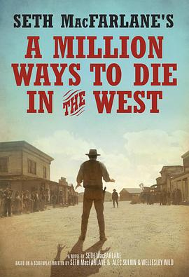

死在西部的一百万种方式 / A Million Ways to Die in the West
又名：夺命西(港) / 百万种硬的方式(台) / 西部的一百万种死法
是烂片，不过贱得深得我心
作品信息
| 导演 | 塞思·麦克法兰 |
| 编剧 | 塞思·麦克法兰 / 亚历克·苏雷金 / 韦尔斯利·怀尔德 |
| 主演 | 塞思·麦克法兰 / 查理兹·塞隆 / 阿曼达·塞弗里德 / 连姆·尼森 / 吉奥瓦尼·瑞比西 / 尼尔·帕特里克·哈里斯 / 萨拉·西尔弗曼 / 韦斯·斯塔迪 / 亚伦·麦弗逊 / 瑞克斯·林恩 / 布雷特·里克比 / 艾利克斯·布斯汀 / 瑞安·雷诺兹 / 杰米·福克斯 |
| 类型 | 喜剧 / 西部 |
| 制片国家/地区 | 美国 |
| 语言 | 英语 |
| 上映日期 | 2014-05-30(美国) |
| 片长 | 116分钟 / 134分钟(未分级版) |
| IMDb | tt2557490 |
最后一次看到是 2026-08-12T21:13:07+08:00 · 豆瓣原页